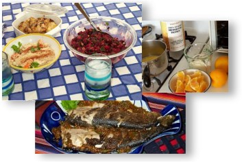

|
Welcome,
Benvinguts, Bienvenidos, Shalom!
April,
2000: I've been on the SCD since 1/1/1997. I consider my Crohn's
Disease to be in a "controlled remission". Yes,
I've broken a few rules along the way--sometimes I even got
away with it for a few days before some CD symptoms appear.
At any rate, I have taken only 3 sick days from work in the
last 3 years. I'm "regular" (something the drugs
never achieved), and my weight is stable.
The regimen
I follow offers me the ability to pursue the same things I
pursued under the previous 15 prescriptive-drug-laden years
of my life. The difference is that the SCD is healthier, has
no weird long term effects (like baldness from 6-MP and osteopenia
from Prednisone), and is actually a lot of fun! The SCD is
a life saver!

When
to start?
I believe that everyone will find a "right time"
to start the SCD. For me, I launched into the diet from a
point of drug-induced stability. Not everyone will have that
luxury. Eventually one learns to say goodbye to the unhealthy
food that so many others eat.
What
do I eat?
Corn chips with artificial flavorings, the sugary snacks of
my heritage, syrupy drinks: Goodbye! I eat all kinds of free-range
animal protein (beef, poultry, fish, shellfish, pork), almost
every kind of vegetable you can think of (except, of course,
the ones on the "no" list), many kinds of fruits,
nuts.... My wife and I make Chinese, Indian, Thai, Southwestern,
Spanish, Mexican, and American foods. I modify traditional
recipes as I see fit.
If you
are looking for recipe and menu ideas you can check out Flog
(also known as Nirvana of Peristalsis), my daily food log
of SCD munchings. I also find a complete regimen of exercise,
stress management (especially yoga), and a positive attitude
to be factors which are critical
to my continued success.
What's
with the doctors?!
Don't get me started--you'll read plenty about the doctors
in Mik's testimonial. My own doctor has started to support
the SCD after seeing my results. Suffice it to say that the
CCFA and most specialists need a major wake-up call.
The
Internet
Since 1994 I've been so aware of this wonderful medium for
learning. It was in 1996 that I found Mik's first site; it
was 1997 when I started to include information about the SCD
on my own site. And now Mik and I have just launched this
whole site with a new design (you're looking at it!). It is
so nice to be able to give something back!
Mike Simons
Tucson, April 2000
see also: www.glassbird.com
Update,
2004
I'm still in remission. Cured? Controlled remission? Doctors,
insurance companies, and patients do not agree on the definition
or criteria of a cure. I'm still following the diet, managing
stress through exercise and yoga. I keep a positive attidude
and get lots of loving support from family.
I love
to cook, and this diet is a lot of fun! My wife and I have
finished a book that is the result of 8 years of kitchen creativity,
converting favorite recipes to SCD guidelines. Our book contains
grain-free and gluten-free recipes for many of the SCD meals
documented in (Flog),
and much more.
|